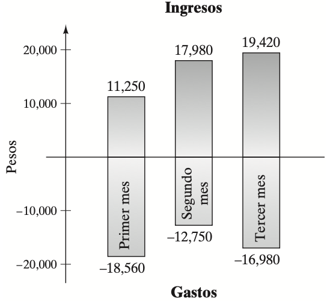

Ejercicios propuestos Primer Examen Parcial
Ejercicio
En los siguientes problemas escriba los conjuntos dados por extensión, cuando sea posible.
-
$A := \{x \mid x \text{ es una letra de la palabra "OAXACA"} \}$
-
$B := \{x \mid x \text{ es una letra de la palabra "ADMINISTRACION"} \}$
-
$C := \{x \mid x \text{ es una letra de la palabra "GUELAGUETZA"} \}$
-
$D := \{x \mid x \text{ es tu profesor(a) en el Propedéutico UMAR 2025} \}$
-
$E := \{x \mid x \text{ es el(la) rector(a) de la UMAR} \}$
-
$F := \{x \mid x \text{ es un país del continente americano que comienza con la letra M} \}$
-
$G := \{x \mid x \text{ es un mes del año que contiene la letra R} \}$
-
$H := \{x \mid x \text{ es un número entero positivo divisor de 128} \}$
-
$I := \{x \mid x \text{ es una palabra que contiene todas las vocales} \}$
Ejercicio
En los siguientes problemas escriba por comprensión los siguientes conjuntos dados:
- $A := \{\text{a, e, i, o, u}\}$
- $B := \{2, 3, 5, 7, 11, 13, 17, 19, 23, \ldots\}$
- $C := \{1, 3, 5, 7, 9, 11, 13, 15, \ldots\}$
- $D := \{\text{a, b, c, d,} \ldots \text{, x, y, z}\}$
- $E := \{10,20,30,40,50 \ldots\}$
- $F := \{1, 4, 9, 16, 25, 36, \ldots\}$
- $G := \{\text{lunes, martes, miércoles, jueves, viernes}\}$
- $J := \{5, 10, 15, 20, 25, \ldots\}$
- $K := \{-3, -2, -1, 1, 2, 3, \ldots\}$
Ejercicio
Diga si las siguientes proposiciones son verdadeeras o falsas. Justifica tu respuesta explicando porque.
- $5=\{5\}$
- $3 \in \{3,5 \}$
- $\{a,b,c \}=\{a,b,c,d,e \}$
- $\emptyset \subseteq \{1,2,a,b \}$
- $0 \in \emptyset$
- $4 \in \{\{ 1,4\}, \{2,4 \} \}$
- $\{3,4\} \in \{\{ 1,4\}, \{3,4 \} \}$
- $\{2,4 \}= \{\{2 \} , \{4 \} \}$
- $\{ p\}=\{p.\emptyset \}$
- $\{\emptyset,0,1 \}=\{\emptyset,1 \}$
- $\emptyset=\{0 \}$
- $\emptyset=\{ \emptyset\}$
- $\{ a,i\} \in \{a,e,i,o,u \}$
- $\{ e,i\} \subseteq \{a,e,i,o,u \}$
Ejercicio
Indica si cada uno de los siguientes enunciados es verdadero (V) o falso (F).
- $0$ es un número entero no negativo.
- $-1$ es un número entero negativo.
- $-7.3$ es un número real.
- $\displaystyle{\frac{3}{5}}$ es un número entero.
- $0.6$ es un número entero.
- $0$ es un número real.
- $\sqrt{2}$ es un número racional.
- $\sqrt{3}$ es un número real.
- $\displaystyle{\frac{-1}{5}}$ es un número racional.
- $\displaystyle{\frac{2}{-3}}$ es un número racional.
- $0$ es un número racional.
- $-2.4$ es un número racional.
- $4$ es un número irracional.
- $0$ es un número entero positivo.
- $0$ es un número entero negativo.
- $\displaystyle{\frac{-3}{5}}$ es un número irracional.
- Todo número natural es un número racional.
- El símbolo $\emptyset$ se utiliza para representar el conjunto vacío.
- Todo número entero es un número real positivo.
- Todo número real es un número racional.
- Todo número entero negativo es un número real.
- Hay números racionales que no son números reales.
- Cuando se agrega el 0 al conjunto de números para contar, se forma el conjunto de enteros no negativos.
- Se emplea el símbolo $\mathbb{R}$ para representar el conjunto de números reales.
- Se emplea el símbolo $\mathbb{Z}$ para representar el conjunto de números racionales.
- Todo número real mayor que cero es un número entero positivo.
- Se emplea el símbolo $\mathbb{N}$ para representar el conjunto de los números enteros positivos.
- El conjunto de números que resulta despues de unir los números enteros negativos, los números enteros positivos y el 0 es
el conjunto los números enteros.
- Los números naturales y los números enteros positivos, son nombres diferentes para el mismo conjunto de números.
- Se emplea el símbolo $\mathbb{I}$ para representar el conjunto de números irracionales.
Ejercicio
Considere el siguiente conjunto de números:
$$\left\{- \frac{5}{7}, 0, -2, 3, 6, \frac{1}{4}, \sqrt{7}, -\sqrt{3}, 1.63, 77\right\}$$
Enliste aquellos que sean:
- Enteros positivos
- Enteros no negativos
- Enteros
- Racionales
- Irracionales
- Reales
Ejercicio
Considere el siguiente conjunto de números:
$$\left\{-6, 7, 12.4, -\frac{9}{5}, -2\frac{1}{4}, \sqrt{3}, 0, 9, \sqrt{7}, 0.35\right\}$$
Enliste aquellos que sean:
- Enteros positivos
- Enteros no negativos
- Enteros
- Racionales
- Irracionales
- Reales
Ejercicio
Sean $x,y,z \in \mathbb{R}$. Establezca cual o cuales axiomas de los números reales justifican cada una de las
siguientes igualdades:
- $(6+8)x=x(6+8)$
- $(x+3)y + 2= (x\cdot y + 3 \cdot y) + 2$
- $(3 + 5) + 2 = 3 + (5 + 2)$
- $(2 + 3) + 5 = 2 + (3 + 5)$
- $[(1)(2)](3) = [(2)(1)](3)$
- $(x + y) + 3 = (y + x) + 3$
- $(1 + 2)(-3) = 1(-3) + 2(-3)$
- $[(w + 3)2]z = [2(w + 3)]z$
- $(-13 + z)(2) + 7 = [z + (-13)](2) + 7$
- $(a - b)+ [-(a - b)] = 0$
- $(3 + 4)(5 + 2) = (3 + 4)5 + (3 + 4)2$
- $x(y + 0) + z = xy + z$
- $(x + 2) + [-(x + 2)] = 0$
- $2(x+y)= 2x + 2y$
- $(x+5)+y= y + (x+5)$
- $2(3z)= (2 \cdot 3) z$
- $y + (x+y)= (y + x) + y$
- $5(4 + 7)= 5 (7 + 4)$
- $(8 + a)b = 8b + a b$
- $(-1)[-3 + 4 ] = (-1)[-3] + (-1)[4] $
Ejercicio
En los siguientes ejercicios, escribe el número entero que representa cada situación.
- Un submarino está sumergido a 93 metros.
- La temperatura es de 4°C.
- Está 6 metros sobre el nivel del mar.
- Tiene $35 en sus ahorros.
- La temperatura es de 15°C bajo cero.
- 36 metros bajo el nivel del mar.
- 18°C sobre el punto de congelación del agua.
- Debe $200.
- Se hundió un metro bajo el nivel del mar.
- 5°C bajo el punto de congelación.
- Debe $14 a su hermana.
- Tiene $805 en su alcancía.
- La cima de la montaña está a 1,500 metros sobre el nivel del mar.
- La Ciudad de México está a 2,303 metros sobre el nivel del mar.
- El helicóptero se elevó 1,650 metros sobre el nivel del mar.
- Un día de invierno, la temperatura, contando el factor viento, llegó a 32°C bajo cero.
Ejercicio
En los siguientes ejercicios, encuentra el inverso aditivo de cada número.
- $-47$
- $81$
- $-2.5$
- $-3$
- $1.75$
- $-0.01$
- $42$
- $-65$
- $99$
- $-58$
- $-\sqrt{2}$
- $\pi$
- $-3.14$
- $\sqrt{3}$
- $-\pi$
- $\sqrt{10}$
Ejercicio
Evalué cada una de los siguientes expresiones
- $5 + 6$
- $-4 + (-2)$
- $-4 + 4$
- $-6 + 6$
- $0 + 0$
- $18 + (-9)$
- $-4.2 + (-9)$
- $-35 + 4.5$
- $-9.7 + (-5.4)$
- $67 + 28$
- $-45.2 + 31.3$
- $-24.6 + (-13.9)$
- $-8 + 2$
- $-3 + (-5)$
- $-\pi + \pi$
- $-6 + 9$
- $-7 + 7$
- $12 - 5$
- $-4 - 2$
- $-4 - 4$
- $8 - 8$
- $5 - 3$
- $0 - (-5)$
- $-4 - (-4)$
- $-6 - (-2)$
- $-35 - (-8)$
- $-45 - 37$
- $42.3 - 49.7$
- $-1 - 6$
- $-7 - (-4)$
- $7 - (-7)$
- $9 - (-3)$
- $4 - 9$
- $-6 - 6$
- $14 - 7$
- $18 - (-4)$
- $37 - 40$
- $-50 - (-40)$
- $81.3 - 92.5$
- $8 - 9$
- $-4 - (-3)$
- $0 - 7$
- $-3 - 1$
- $6 - (-3)$
- $-9 - 11$
- $-8 - (-12)$
- $-9 - 2$
- $-90 - 60$
- $70 - (-70)$
- $-7.85 - (-3.92)$
- $3 - 3$
- $-3 - 3$
- $9 - (-9)$
- $-5 - (-3)$
- $6 - 10$
- $-4 - (-2)$
- $9 - 9$
- $-25 - 16$
- $-52 - 37$
- $130 - (-90)$
- $-12.43 - (-9.57)$
- $56 + (-14)$
- $-12 + 17$
- $10.34 + (-8.57)$
- $183 + (-183)$
- $180 + (-200)$
- $-4.2 + 6.5$
- $106.3 + (-110.9)$
- $-8 + (-7)$
- $6 + (-6)$
- $-8 + (-2)$
- $-1.5 + 1.7$
- $49 + (-63)$
- $-33 + (-92)$
- $-16 + 9$
- $-33 + (-92)$
Ejercicio
En los siguientes ejercicios, simplifica las expresiones.
- $ - (9)$
- $ - ( - 7)$
- $ - ( - 124)$
- $-2+ (-4)$
- $-6 + 2$
- $6 + (-4)$
- $7 -2$
- $7 -(-4)$
- $-5 - (-13)$
- $-a-(-b)$
- $(-2)(-12)$
- $-[-6 + (-y)]$
- $(-2)(9)$
- $(-2)(-12)$
- $5 + ( - 11) + 9 + ( - 6) + ( - 5) + 9$
- $34 + 53 + ( - 53) + 70$
- $( - 7) + ( - 3) + 0 + 14 + ( - 3) + 10$
- $( - 13 + 16)$
- $( - 634 - 498)$
- $( - 10 - 3)$
- $ - ( - \pi)$
- $( - 71) + 17$
- $( - 20) + ( - 3) + 4 + 18 + ( - 7) + 1$
- $37 + ( - 48) + 62 + ( - 15) + 19 + ( - 21)$
- $(-4) + (-6) + (-12)$
- $5 + (-7) + (-8)$
- $29 + (-46) + 37$
- $4 + (-5) + 6 + (-8)$
- $(-12) + (-10) + 25 + (-3)$
- $(-4) + (-2) + (-15) + (-27)$
- $( - 36) + ( - 24) + ( - 51) + ( - 612)$
Ejercicio
En los siguientes ejercicios, determine por observación si la suma será un número positivo, cero o negativo.
- $587 + (-197)$
- $-140 + (-629)$
- $-947 + 495$
- $762 + (-762)$
- $-375 + 263$
- $1127 + (-84)$
- $3124 + (-2013)$
- $-9095 + (-647)$
- $-84 + (-289)$
- $-647 + 352$
- $-354 + 1090$
- $-496 + (-804)$
- $-1833 + (-2047)$
- $-426 + 572$
- $7513 + (-4361)$
Ejercicio
Indique si cada enunciado es verdadero (V) o falso (F).
- La suma de dos números negativos siempre es negativa.
- La suma de un número negativo con otro positivo a veces es negativa.
- La suma de dos números positivos nunca es negativa.
- La suma de un número positivo y uno negativo siempre es negativa.
- La suma de un número y su opuesto siempre es igual a cero.
Ejercicio
Escriba una expresión que pueda utilizarse para resolver cada problema y después soluciónelo.
- Tarjeta de crédito: El Sr. Peter debía \$94 a su tarjeta de crédito. Compró un artículo que costaba \$183. Encuentre la cantidad que el Sr. Peter debe al banco.
- Tarjeta de débito: La Sra. Chu compró artículos por \$142 con su tarjeta de débito. Encuentre su saldo después de realizar un pago de \$87.
- Fútbol: Un equipo de fútbol americano perdió 18 yardas en un juego y en el siguiente otras 3. ¿Cuál fue su pérdida total de yardas?
- Impuesto al ingreso: La Sra. Powseki pagó \$1,823 en impuestos federales. Cuando fue auditada, tuvo que pagar \$471 adicionales. ¿Cuál fue su impuesto total?
- Perforación en busca de agua: Una compañía perforadora excavaba un pozo. Durante la primera semana perforó 27 pies, y durante la segunda avanzó 34 pies antes de encontrar agua. ¿Qué tan profundo es el pozo?
- Valle de la muerte: Los Duncan se encuentran en un punto a 267 pies por debajo del nivel del mar, en el Valle de la Muerte, en California. Proceden a escalar una distancia vertical de 198 pies en una montaña. ¿Cuál es su posición vertical en términos del nivel del mar?
- Alta montaña: La edición 2002 de The Guinness Book of World Records, menciona que el Mauna Kea, en Hawai, es la montaña más alta del mundo si se mide de su base a la cumbre. La base del Mauna Kea se encuentra a 19,684 pies bajo el nivel del mar. La altura total de la montaña de la base a la cumbre es de 33,480 pies. ¿A qué altura está el pico del Mauna Kea, sobre el nivel del mar?
- Barra de café: Los French abrieron una cafetería. Su ingreso y los gastos durante sus primeros tres meses de operación aparecen en la siguiente gráfica:

- Encuentre la utilidad o pérdida neta (la suma del ingreso y los gastos) durante el primer mes.
- Determine la utilidad o pérdida neta durante el segundo mes.
- Calcule la utilidad o pérdida neta en el tercer mes.
- Un día de invierno, la temperatura en la madrugada era de 8°C. Durante la mañana subió 12°C, en la tarde descendió 5°C y en la noche bajó 3°C. ¿Qué temperatura había en la noche?
- Un submarino está a 210 metros bajo el nivel del mar. Debido a las fuertes corrientes tiene que descender 74 metros. Más tarde sube 50 metros. ¿A qué profundidad está el submarino?
- Un elevador estaba en el piso 12. Bajó 5 pisos, subió 13 y bajó 2. ¿En qué piso está ahora?
- Un avión subió hasta una altitud* de 8,825 metros. Debido al mal tiempo, tuvo que elevarse 1,547 metros. Después descendió 1,239 metros para continuar su viaje. ¿Qué altitud llevaba?
- Ricardo tiene una tarjeta de crédito con un saldo a favor de \$229. Pagó con la tarjeta \$296, \$103 y \$76. Como había gastado mucho, depositó \$130. ¿Qué saldo tiene ahora en la tarjeta de crédito?
- Un alpinista está en la cima del Popocatépetl cuya altitud es 5,452 metros. Desciende 476 metros. Otro alpinista está al pie del volcán, en Tlamacas, a 4,000 metros, y asciende 892 metros. ¿Cuál es la diferencia entre las altitudes a las que están los dos alpinistas?
- La Ciudad de México tiene una altitud de 2,303 metros. Un helicóptero de noticias sobrevuela la ciudad. Sube 193 metros, desciende 24 metros, baja 9 metros y se eleva 38 metros. Después de todos estos movimientos, ¿qué altitud tiene?